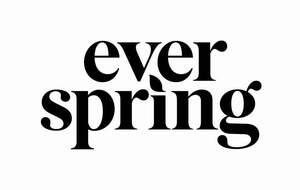

Trade Mark Journal No.2026/011 13 March 2026
UK00004321009 8 January 2026 (3,4,5,8,16,21,35)

- Class 3
- Alcohol for cleaning purposes; Hand lotions; Household cleaning preparations; Laundry detergent; Fabric softeners for laundry use; Laundry fabric conditioner; Dishwashing detergents; Dishwashing liquid; Automatic dishwashing detergents; Dishwasher rinsing agents; Disposable wipes impregnated with cleansing chemicals or compounds for household use; Air fragrance reed diffusers; Air fragrancing preparations; Refills for non-electric diffusers for air fragrancing preparations; Disposable wipes impregnated with cleansing chemicals or compounds for personal hygiene; Non-medicated liquid soap; Fragrances for automobiles; All-purpose cleaners; Essential oils; Scented oils; Pre-moistened cosmetic towelettes; Pre-moistened towelettes for cleaning.
- Class 4
- Candles.
- Class 5
- Hand-sanitizing preparations; all-purpose disinfectants; insect repellents.
- Class 8
- Disposable tableware, namely, forks, knives and spoons.
- Class 16
- Paper napkins; Plastic food storage bags for household use; Plastic sandwich bags; Paper sandwich bags; Facial tissue; Bathroom tissue; Paper towels.
- Class 21
- Ultrasonic essential oil diffusers; Ultrasonic aromatherapy diffusers; Disposable dinnerware, namely, plates, bowls and cups; Plastic household containers for food; Thermal insulated containers for food or beverages; Dryer balls; Insulated lunch bags; Toothbrushes; Cleaning sponges; Bath sponges; Bath products, namely, body sponges; Disposable latex gloves for general use; Gloves for household purposes; Toothpicks; Paper baking cups; Waste baskets; Laundry baskets; Drinking straws; Dental floss; Dental floss picks; Dental care kit comprising toothbrushes and floss; Hair brushes; Hair combs; Brooms; Dusters.
- Class 35
- Retail department store services and online retail department store services connected with the sale of Alcohol for cleaning purposes, Hand lotions, Household cleaning preparations, Laundry detergent, Fabric softeners for laundry use, Laundry fabric conditioner, Dishwashing detergents, Dishwashing liquid, Automatic dishwashing detergents, Dishwasher rinsing agents, Disposable wipes impregnated with cleansing chemicals or compounds for household use, Air fragrance reed diffusers, Air fragrancing preparations, Refills for non-electric diffusers for air fragrancing preparations, Disposable wipes impregnated with cleansing chemicals or compounds for personal hygiene, Non-medicated liquid soap, Fragrances for automobiles, All-purpose cleaners, Essential oils, Scented oils, Pre-moistened cosmetic towelettes, Candles, Hand-sanitizing preparations, all-purpose disinfectants, insect repellents, Disposable tableware, namely, forks, knives and spoons, Paper napkins, Plastic food storage bags for household use, Plastic sandwich bags, Paper sandwich bags, Facial tissue, Bathroom tissue, Paper towels, Ultrasonic essential oil diffusers, Ultrasonic aromatherapy diffusers, Disposable dinnerware, namely, plates, bowls and cups, Plastic household containers for food, Thermal insulated containers for food or beverages, Pre-moistened towelettes for cleaning, Dryer balls, Insulated lunch bags, Toothbrushes, Cleaning sponges, Bath sponges, Bath products, namely, body sponges, Disposable latex gloves for general use, Gloves for household purposes, Toothpicks, Paper baking cups, Waste baskets, Laundry baskets, Drinking straws, Dental floss, Dental floss picks, Dental care kit comprising toothbrushes and floss, Hair brushes, Hair combs, Brooms, Dusters; wholesale store services connected with the sale of Alcohol for cleaning purposes, Hand lotions, Household cleaning preparations, Laundry detergent, Fabric softeners for laundry use, Laundry fabric conditioner, Dishwashing detergents, Dishwashing liquid, Automatic dishwashing detergents, Dishwasher rinsing agents, Disposable wipes impregnated with cleansing chemicals or compounds for household use, Air fragrance reed diffusers, Air fragrancing preparations, Refills for non-electric diffusers for air fragrancing preparations, Disposable wipes impregnated with cleansing chemicals or compounds for personal hygiene, Non-medicated liquid soap, Fragrances for automobiles, All-purpose cleaners, Essential oils, Scented oils, Pre-moistened cosmetic towelettes, Candles, Hand-sanitizing preparations, all-purpose disinfectants, insect repellents, Disposable tableware, namely, forks, knives and spoons, Paper napkins, Plastic food storage bags for household use, Plastic sandwich bags, Paper sandwich bags, Facial tissue, Bathroom tissue, Paper towels, Ultrasonic essential oil diffusers, Ultrasonic aromatherapy diffusers, Disposable dinnerware, namely, plates, bowls and cups, Plastic household containers for food, Thermal insulated containers for food or beverages, Pre-moistened towelettes for cleaning, Dryer balls, Insulated lunch bags, Toothbrushes, Cleaning sponges, Bath sponges, Bath products, namely, body sponges, Disposable latex gloves for general use, Gloves for household purposes, Toothpicks, Paper baking cups, Waste baskets, Laundry baskets, Drinking straws, Dental floss, Dental floss picks, Dental care kit comprising toothbrushes and floss, Hair brushes, Hair combs, Brooms, Dusters; online wholesale store services connected with the sale of Alcohol for cleaning purposes, Hand lotions, Household cleaning preparations, Laundry detergent, Fabric softeners for laundry use, Laundry fabric conditioner, Dishwashing detergents, Dishwashing liquid, Automatic dishwashing detergents, Dishwasher rinsing agents, Disposable wipes impregnated with cleansing chemicals or compounds for household use, Air fragrance reed diffusers, Air fragrancing preparations, Refills for non-electric diffusers for air fragrancing preparations, Disposable wipes impregnated with cleansing chemicals or compounds for personal hygiene, Non-medicated liquid soap, Fragrances for automobiles, All-purpose cleaners, Essential oils, Scented oils, Pre-moistened cosmetic towelettes, Candles, Hand-sanitizing preparations, all-purpose disinfectants, insect repellents, Disposable tableware, namely, forks, knives and spoons, Paper napkins, Plastic food storage bags for household use, Plastic sandwich bags, Paper sandwich bags, Facial tissue, Bathroom tissue, Paper towels, Ultrasonic essential oil diffusers, Ultrasonic aromatherapy diffusers, Disposable dinnerware, namely, plates, bowls and cups, Plastic household containers for food, Thermal insulated containers for food or beverages, Pre-moistened towelettes for cleaning, Dryer balls, Insulated lunch bags, Toothbrushes, Cleaning sponges, Bath sponges, Bath products, namely, body sponges, Disposable latex gloves for general use, Gloves for household purposes, Toothpicks, Paper baking cups, Waste baskets, Laundry baskets, Drinking straws, Dental floss, Dental floss picks, Dental care kit comprising toothbrushes and floss, Hair brushes, Hair combs, Brooms, Dusters .
Target Brands, Inc.
Representative: Cleveland Scott York